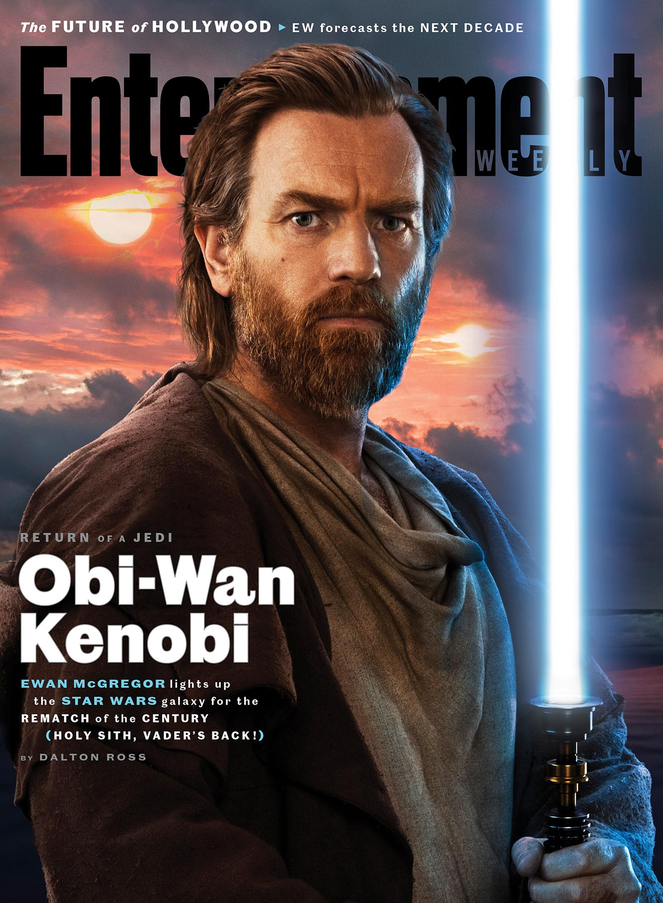

Kadir ÇANAKCI
Hakkımda
Merhaba. Ben Kadir, 2. sınıf Bilgisayar Mühendisliği öğrencisiyim. Kariyer hedefim başarılı bir Blockchain mühendisi olmak ve kendi projemi oluşturmak ve bu doğrultuda en baştan web3 öğrenmek için buradayım.
Merhaba. Ben Kadir, 2. sınıf Bilgisayar Mühendisliği öğrencisiyim. Kariyer hedefim başarılı bir Blockchain mühendisi olmak ve kendi projemi oluşturmak ve bu doğrultuda en baştan web3 öğrenmek için buradayım.
Obi-Wan Kenobi, Disney+ yayın hizmeti için yaratılan ve aynı adı taşıyan Star Wars karakterini içeren, yakında çıkacak bir Amerikan televizyon mini dizisidir. Yıldız Savaşları: Bölüm III - Sith'in İntikamı olaylarından on yıl sonra geçen seri, Joby Harold tarafından yazılıyor ve Deborah Chow tarafından yönetiliyor.
